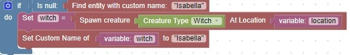
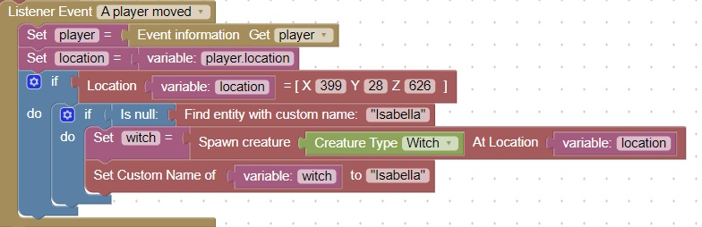
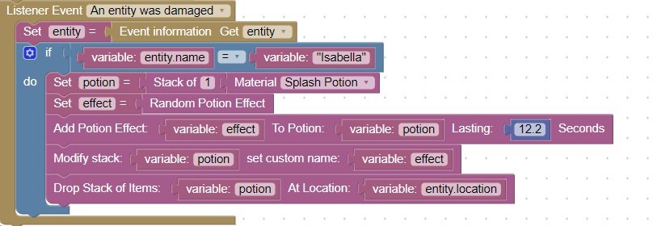

Manage Boss Monsters
Only spawn 1 monster
Isabella is a witch that appears when the player moves over a specific x,y,z coordinate.
A check is made to see if Isabella already exists in the world:

Only spawn monster when player location is it a known spot
This code uses a "Location =" block that is found in the World=>Location area

Have boss monster drop an item when damaged
The listener event "An entity was damaged" is triggered when any entity takes damage
